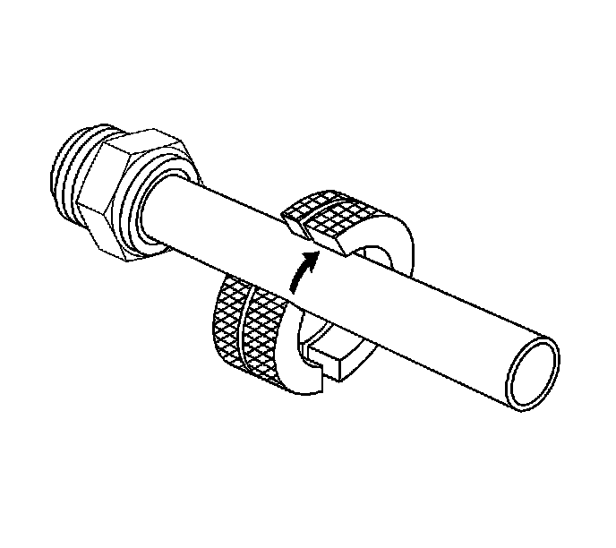
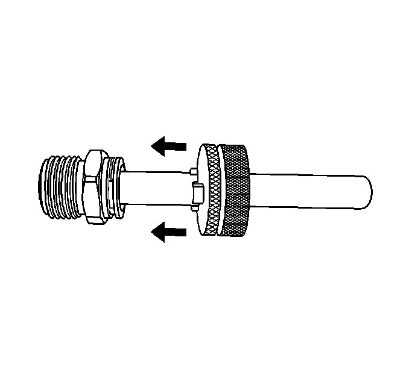
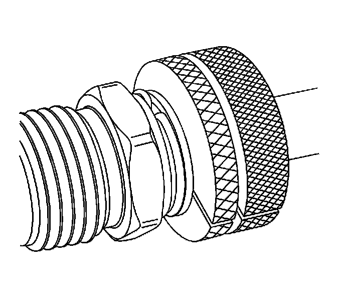
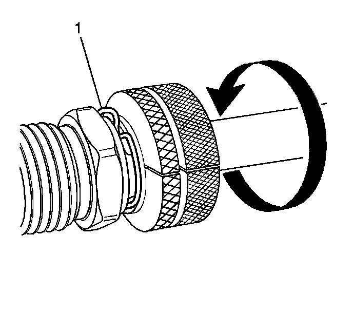
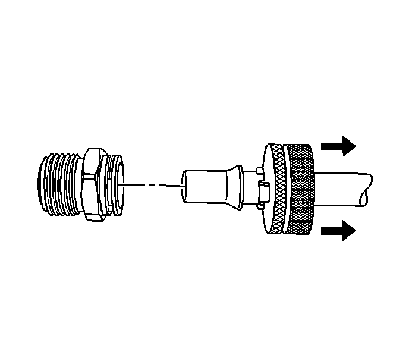
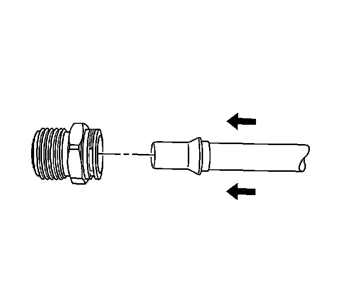

Transmission Fluid Cooler Hose/Pipe Quick-Connect Fitting Disconnection and Connection
Transmission Fluid Cooler Hose/Pipe Quick-Connect Fitting Disconnection and Connection
Removal Procedure

1. Install the J 41623-B onto the transmission oil cooler (TOC) pipe.

2. Slide the J 41623-B toward the TOC pipe fitting.

Important: Rotate the J 41623-B to engage the TOC pipe fitting's retainer slots.
The J 41623-B should be nearly flush with the fitting.
3. Connect the J 41623-B onto the TOC pipe fitting.

4. Rotate the J 41623-B until the retainer clip (1) rises above the fitting retainer seat.

5. Pull back on the TOC pipe to disengage the pipe from the TOC pipe fitting.
6. Remove the J 41623-B from the TOC pipe.
Installation Procedure

Important: Inspect the TOC pipe fitting and retaining clip for signs of wear or damage. Replace the components if necessary.
1. Install the TOC pipe into the TOC pipe fitting.
A distinct snap should be heard or felt when assembling the TOC pipe to the fitting.
2. To ensure the cooler line is properly installed, give the cooler pipe a gentle pull.